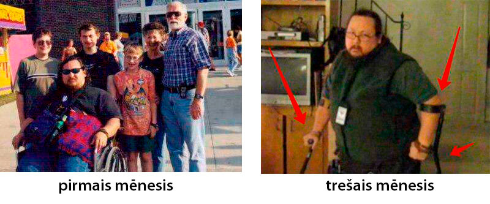
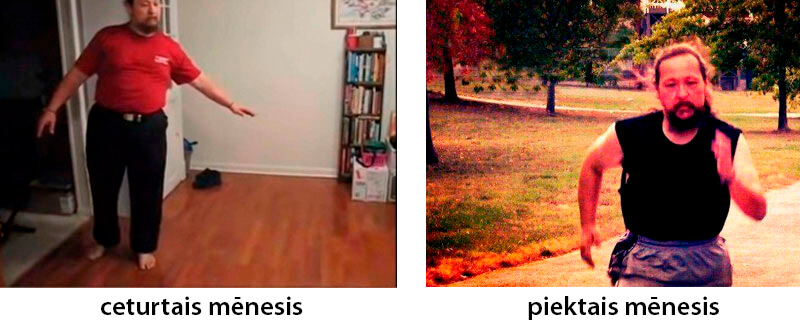
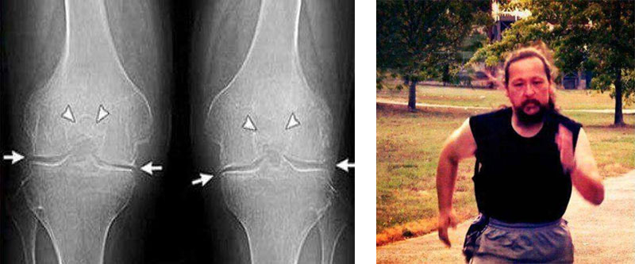
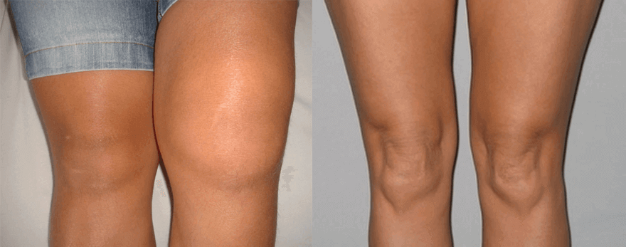

Lētāk ir izārstēt locītavas 1
reizi - nekā ārstēt tās pastāvīgi!
Artoze padarīja mani par invalīdu
pāris mēnešu laikā, bet bet ar 4 augu palīdzību es ātri atjaunoju skrimšļaudus un
locītavas
Gribu dalīties ar Jums ar savu stāstu, kā es būdams vesels cilvēks 2 mēnešu laikā iesēdos
invalīdu krēslā, un pēc tam ātri izārstējos un nostājos uz kājām!

Mani sauc
Alvis Magonis, man ir 46 gadi. Nekad mūžā nevarēju iedomāties, ka locītavu slimības – tas ir ļoti nopietni,
es, kā jau katrs cilvēks, vienmēr biju domājis: "Es kādreiz iesēdīšos ratiņkrēslā? Da nē, ar mani tā
noteikti nenotiks...." Tā, droši vien, lasot šos vārdus, domā katrs....bet es pārāk zemu novērtēju parastas
locītavu sāpes...
Sākās viss tā,
visparastākajā dienā, es gāju uz darbu un sajutu ceļos ne pārāk spēcīgas, bet kaut kādas asas, nepatīkamas,
cauršaujošas sāpes. Sākumā, protams, nepievērsu tam nekādu uzmanību, maz kur var iedurties, iesmelgt – pats
pāries, jo vienmēr viss kaut kā pats pārgāja, sadziedinājās utt. Bet šoreiz nepārgāja, pat tieši otrādi, pēc
pāris mēnešiem ceļi sāka sāpēt vienkārši staigājot, un ar katru dienu man kļuva arvien sliktāk un
sliktāk.
Es nolēmu, ka
pārslogoju locītavas aktīva dzīvesveida dēļ (darbs uz kājām, nodarbojos tajā laikā ar sportu), nodomāju, ka
vajag atpūsties, paņēmu atvaļinājumu, lai ceļgalus maksimāli atslogotu, smēri kādu pasmērēt, un viss pavisam
noteikti pāries. Droši vien daudzi cienījami lasītāji savos gadījumos, sprieda tāpat. Bet no tādām domām un
ziedēm vieglāk nepalika, sāpes pastiprinājās, pietam pietiekami ātri īsā laika periodā, kā nonāca līdz tam,
ka es vienkārši vairs nevarēju nostāties uz kājām pēc mēneša, un es sāku pārvietoties pa dzīvokli
ratiņkrēslā, dzēru diennakts pretsāpju līdzekļa devu — divas tabletes minimums.
Īsāk sakot,
situācija no, kā likās, mazām nepatikšanām pārliecinoši un ātri pārvērtās briesmīgā realitātē, es pat
iedomāties nevarēju, ka jau pēc dažiem mēnešiem nevarēšu nostāties uz kājām briesmīgu sāpju dēļ!
Ja saslimsti – jāiet pie ārsta,
viņš zina par slimību daudz, viņš tās ārstēs līdz pašai savai nāvei, tas ir viņa darbs

Kā negrozi,
bet nācās iet pie ārsta, mana sieva uzstāja uz tā. Ģimenes ārsts nosūtīja mani pie reimatologa, nokļūt pie
kura man izdevās vairāk kā pēc mēneša, rinda taču, ne es viens ar locītavām mokos, mūsu izrādījās daudz.
Mani satika ļoti padzīvojusi ārste, neko nesakot nosūtīja mani uz rentgenu un asins/urīna analīzēm. Otrajā
pieņemšanā pāris minūtēs uzstādīja man diagnozi — kaut kāda artroze, primārā vai sekundārā tagad vairs
precīzi neatceros, un tas nemaz nav svarīgi.
Nu, diagnoze
labi, mani taču interesē nevis kā tas saucas, bet kā no šīs nelaimes ātrāk tikt vaļā un tā, lai pēc tam
recidīvu nebūtu? Un, lūk, šeit mani sagaidīja nepatīkami atklājumi, par šīs kaites iemeslu vecmāmiņa-ārste
man paziņoja manu vecumu! Tā arī pateica: "Tas jums no vecuma". Kāds vecums?! Man ir tikai četrdesmit
septiņi! Manai meitiņai ir 2 gadiņi, es esmu jauns tētuks, nevis vecs reimatiķis, tas ir artroziķis! Bet vēl
vairāk mani "iepriecināja" viņas ārstēšanas rekomendācijas, to bija trīs:
Pirmais –
noņemt no kājām visu fizisko slodzi, bet tās jau tā sen vairs nav, sāpes ātri atradina ķerties pie
smagumiem.
Otrkārt,
jāziež sildoša ziede, kādas pa televizoru katru dienu no rīta līdz vakaram reklamē. Es apskaužu dažreiz
viegli iespaidojamus cilvēkus, viņiem saki, smērējies un pāries, viņi smērējas un pāriet, bet man visu
saprast vajag, kā ziede ar minimālu aktivitāti var iekļūt caur ādu, visādos tur mīkstajos un saistaudos,
iekļūt iekšā locītavā un tur kaut ko izārstēt, nu kas man paskaidros šī maģiskā procesa fiziku? Un arī ziežu
es tos jau sen, ne vienu vien tūbiņu izsmērēju, viss bezjēdzīgi.
Nu un trešais
ieteikums dzert kaut kādas tabletes, kuras palīdz atjaunot skrimšļu audus, lasām uzmanīgi – nevis atjauno,
bet tikai palīdz. Un viss! Ejiet, cietieties, nauda būs — laipni lūgti...
Izejot no
"medicīnas" mēs sapratām, ka ārstēt mani tur ir gatavi, neatsakās, bet izārstēt nē. Un kā mums likās, viņi
paši nesaprot, kāds ir manas slimības iemesls, un, ja iemesls nav zināms, tad kā kaiti likvidēt? Ja tabletes
(ne lētas, starp citu) tikai veicina, tas ir, palīdz, kam tās palīdz? Kas šos manus audus atjauno, ar
tabletēm vai bez? Un kāpēc tas agrāk to darīja, bet tagad vairs nē? Vieni vienīgi jautājumi... Protams, ir
vēl variants aiznest savu naudu uz maksas klīniku, bet kaut kas man teica priekšā, ka rezultāts būs tāds
pats, tikai dārgāks. Nu neticu es ne maksas medicīnai, ne maksas izglītībai. Jo problēma nav ārstā, vai nu
viņa ir pensionāre rajona poliklīnikā vai jaunāka dāma modernā MC, bet pašā pieeju problēmai. Kā var ārstēt
kaut ko, pat nemēģinot saprast īsto kaites cēloni? Tas ir kā ķert pelēku kaķi tumšā istabā: var būt noķersi,
bet varbūt nē. Bet man sāp, man vajadzīgs pareizs un simtprocentīgs izārstēšanās veids.
Es ieslīgu
depresijā. Man bija panika, es nezināju ko man darīt, es sāku nolaist rokas. Bet mana sieva, paldies Dievam,
nepadevās, par ko es tagad esmu viņai ļoti pateicīgs! Viņas frāze bija tāda: Ja gribi nevis ārstēties, bet
izārstēties, tad izārstēties vajag kā vecā padomju laika filmā "pati-pati-pati".
Ar
pašārstēšanos nodarboties nevar, tas ir likums, bet ar pašizārstēšanos – tikai pats vien vari. Sieva sāka
domāt un minēt, kā sērgu savaldīt, kaut ko sadomāja un nolēma uz manis eksperimentēt, saprotot visu šīs
rīcības necilvēcību. Un sāka ar pašmācību.
Internets
protams ir lieliska lieta, ļoti īsā laikā var iepazīties arī ar dziļas senatnes teikām un klausīties ārzemju
profesora lekciju reālā laikā. Uzzināt kas tur par locītavām rakstīts ķīniešu "dzeltenā imperatora
traktātā", un ko par šo jautājumu domā jogi Ajurvēdas Vedantas adepti, un kā latviešu zemē kaulus
laboja.
Es sievai arī
palīdzēju meklēt informāciju, jo caurām dienām gultā nebija ko darīt. Pēc 1,5 mēneša visas pieejamās
informācijas pētīšanas par locītavu ārstēšanu un atjaunošanu, mēs sastādījām sev sarakstu no pieciem dabas
"briljantiem, kas dažādos laikos tika izmantoti, lai ārstētu Imperatorus, Ķēniņus, Ģenerālsekretārus, Jogus,
Tibetas mūkus, Vecticībniekus un vēl daudzus citus.
Pirmo vietu
ieņem "Baltegles eļļa". Baltegles ekstrakts ir tīrā veidā koncentrētas molekulas, no kurām sastāv skrimšļi
un kas ar pārsteidzošu ātrumu atjauno šos pašus skrimšļaudus.
"Marala ragu
ekstrakts". Pirmo reizi tika izmantots Altajā. Marala ragu āķis ir to unikālajā spējā šķidrināt un izvadīt
sāls nogulsnes. Tie nekavējoties padara sāls "iegulas" locītavās irdenākas, un pēc 15-19 dienu regulāras
lietošanas pilnībā izšķīdina sāļus locītavās un mugurkaulā. Piekrītiet, ļoti lietderīga īpašība.
"Biogēnais
propoliss" ātrākais dabiskais pretiekaisuma "preparāts". Propoliss strauji iznīcina jebkuru iekaisuma
procesu. Kopš seniem laikiem to izmanto, lai ārstētu radikulītu, reimatismu, poliartrītu, podagru un
varikozi.
"Purva
vārnkāja". Tas bloķē sāpes, kā arī darbojas kā stimulē imūnstimulators, atjauno organismā autoimūno procesu,
kas ir sākuma punkts locītavu saslimšanām un skrimšļu degradāciju. Vārnkāja dažādā laikā tika izmantota
osteohondrozes, artrīta un reimatisma ārstēšanai. Īpaši populārs viņš bija Pētera Lielā cariskajā aptiekā,
kuram bija hroniskas problēmas ar locītavām.
"Sarkanā
sakne". Es speciāli uzrakstīju par četrām ārstniecības sastāvdaļām, piektā – sarkanā sakne, ne gluži ārstē
locītavas, bet tā nav mazsvarīgāka. Sarkanajai saknei piemīt īpašība pastiprināt ārstniecisko komponentu
darbību, pirmais. Un otrais: nodrošina kaulu un skrimšļu audus. Citiem vārdiem sakot pirmie četri augi
skrimšļus un locītavas ĀRSTĒ, bet sarkanā sakne SAGLABĀ sasniegto rezultātu uz desmitgadēm.
Mana sieva atrada to, kas mani
izdziedinās!
Mēs 2 mēnešu
laikā meklējām dažādus līdzekļus, kuros ietilpst šis sastāvs, bet meklējumi bija bezjēdzīgi. Es personīgi
biju vīlies, jau šaubījos, ka man vispār kaut kas var palīdzēt, jebkurš šaubītos manā vietā.
Bet mana sieva
nepadevās! Viņa pastāvīgi bija meklējumos, un kaut kā nejauši uzdūros valsts kanāla daktera rakstam, kurš
stāstīja par līdzekli, kas atjauno jebkuru skrimsli, jebkurā locītavā. Mēs iedegāmies, iepazināmies ar
līdzekļa recepti, par kuru iet runa un sastāvs pilnībā sakrita ar mūsu sarakstu! Tur ir gan Marala ragi, gan
Propoliss, Baltegles eļļa, Sarkanā sakne, vispār viss labāko ekstraktu komplekts locītavām.
Mēs bijām
priecīgi, ka esam atraduši to, ko meklējām! Bet mums piemeklēja vēl viena nelaime, mani atlaida no darba, jo
kroplis, kā viņi teica, nevienam nav vajadzīgs. Ar naudu kļuva ļoti grūti, jo alga sievai bija maza.
Līdzekļa cena pastāvīgi peldēja, un bija pietiekami augsta, tādēļ 2 mēnešus, kā uz darbu, mana sieva katru
dienu apmeklēja dažādas vietnes, meklēja to līdzekli, vai tas nav parādījies par pieejamu cenu. Un kādu
dienu beidzot ieraudzīja, ka to var pasūtīt šī daktera mājas lapā pēc akcijas. Viņa uzreiz paziņoja man, un
es nekavējoties noformēju pasūtījumu, jo nedrīkst gaidīt – izpirks, pat pamirkšķināt nepaspēsi! Burtiski pēc
10 minūtēm piezvanīja jauka meitene, sāka sīki stāstīt par līdzekli kaut kā tā:
Preparāts iedarbojas gandrīz acumirklī, jau 2. dienā atgriežas locītavu kustīgumu, un sāpes
vispār pāriet pēc 8-12 stundām. Bet tieši ārstēšanai un rezultāta nostiprināšanai uz ilgiem gadiem ir
nepieciešams kurss – 27-35 dienas. Tie ir apmēram 4-5 preparāta iepakojumi, tas tiek izlaists vienreizējās
lietošanas ar gēlu pildītu plastmasas ampulu veidā.
– Meitene, neapvainojieties, bet es par šo preparātu zinu vairāk nekā jūs, tāpēc
necentieties. Noformējiet man labāk ar piegādi uzreiz 10 iepakojumus.
– Atvainojiet, bet 10 iepakojumus pasūtīt nevar. Sakarā ar paaugstināto pieprasījumu uz
atvieglojumu programmu mēs piedāvājam maksimums 5 iepakojumus vienās rokās, turklāt 99% gadījumu 5
iepakojumu pietiek, lai pilnībā izārstētos.
– Nu kas tas ir! Es 2 mēnešus gaidīju, gribēju uzreiz ar rezervi paņemt... Nu labi,
noformējiet 5...
Es gribēju
pasūtīt uzreiz 10, katram gadījumam. Tomēr rets līdzeklis, kuru nekādi nedabūt pie tam vēl arī pēc akcijas.
Galu galā uzdāvinātu kādam, bet uzņēmuma politika ir nežēlīga –Ne vairāk par 5 gabaliem vienās rokās
pēc šīs akcijas.
īsāk sakot
atļāva man pasūtīt tikai 5 šī preparāta iepakojumus, apstiprināja pasūtījumu, teica – gaidiet, jūsu
pasūtījums atnāks pa pastu (ar kurjeru izrādījās būs mazliet ilgāk). Jāsaka, ka pa pastu es jau diezgan sen
neko nebiju saņēmis, tādēļ nedaudz saspringu. Kas to pastu zina, pazaudēs vēl manu preparātu, bet man pēc
tam vēl 2 mēnešus jāgaida, kad tas atkal parādīsies ar atlaidi.
Par laimi viss
kārtībā. Pārsteidzoši ātri, jau pēc dažām dienām, mans pasūtījums bija pasta nodaļā. Mana sieva ātri saņēma
sūtījumu uz atnesa mājās.
Rezultāti. Tie ir
satriecoši!
Es, protams,
zināju, ka ārstēšana būs salīdzinoši ātra, kurss tač' ir tikai 30-35 dienām, bet ka efektu es sajutīšu TIK
ātri, man bija pārsteigums! (zemāk es aprakstīju, kā es jutos pēc 1 nedēļas, 2 nedēļām utt.).
Iesmērējot
ceļus pirms gulētiešanas, es devos gulēt, kā parasti uz muguras, jo savādāk es gulēt atradinājos – sāp.
Pamodos es jau uz LABĀ sāna, balstoties ar slimo locītavu uz gultas, un sāpju nebija! Es uzmanīgi sāka celt
manas kājas uz augšu, bet sāpju joprojām nebija! 8 stundu miega laikā ar šo līdzekli sāpes pazuda! Es
apsēdos, nolaidu kājas uz grīdas, un gribēja piecelties kājās, klik-klik, atsaucās mani slimie ceļgali, un
es sajutu vieglas sāpes. Tā, labi, pagaidīsim ar staigāšanu, tomēr tikai 8 ārstēšanas stundas pagājušas, es
padomāju.
Instrukcijā
bija rakstīts: Uzklāt uz slimās locītavas 1 reizi dienā uz nakti. Es uzreiz sāku smērēt 2 reizes, lai ātrāk
ietu process. Uzliekot virsū celofānu, lai saglabātu siltumu.
Manas izdziedināšanās
dienasgrāmata
Es iztērēju
pusgadu, lai atrastu šo līdzekli, un vēl 2 mēnešus gaidīju, kad tas būs pieejams. Bet tas bija tā vērts!
Kopumā šie
mani eksperimenti ar sevi, deva brīnišķīgus rezultātus, simtprocentīgu izdziedināšanos, es tagad pamēģināšu
pa dienām atjaunot savas sajūtas.
8 ārstēšanas stundas:miera stāvoklī izzudušas sāpes.
Nenozīmīgas sāpju sajūtas palikušas kustības laikā.
1.
diena:sāpes pilnīgi izzudušas. Mazinājusies tūska. Varu saliekt ceļus, bet locītavas vēl nedaudz
klakšķ, sāp.
7.
dienabeidzot izzuduši klakšķi locītavās. Viegli kustinu, saliecu ceļus, varu mierīgi nostāties uz
kājām, bet staigāt vēl neesmu riskējis.
14.
diena:jūtos vesels! Staigāju pa dzīvokli, laidās ārā pastaigāties – nekādu nepatīkamu sajūtu!
28.
diena:jūtos brīnišķīgi, noskrēju 1 km un nesajutu VISPĀR NEKĀDAS SĀPES! Es it kā no jauna
piedzimu!
35.
diena:nodevu analīzes un veica pleca un elkoņa rentgenu. Nekādu artrozes pēdu! Locītavu skrimšļi
kā 30-gadīgam puisim. Daktere teica, ka uz iepriekšējā rentgena visticamāk bija defekts, tāpēc diagnoze
Osteoartrīts bija kļūdaina.

Vienkāršāk ir izārstēt locītavas
1 reizi - nekā ārstēt tās pastāvīgi!
Es iztērēju
daudz naudas dažādiem līdzekļiem locītavu atjaunošanai, vizītēm pie ārstiem, pretsāpju līdzekļiem, pat tam
pašam ratiņkrēslam. Un sapratu vienu - labāk ir vienreiz izārstēties un iztērēt kursam, rupji runājot 60-70
eiro, izārstēties un tas būs daudz lētāk, nekā nepārtraukti pirkt bezjēdzīgas ziedes, pretsāpju līdzekļus,
tabletes un iet uz pieņemšanām pie ārsta, veikt mri, un visādas dārgas izmeklēšanas. Pat fakts, ka var kļūt
par invalīdu, labāk vienreiz nopirkt kursu un izārstēties, nekā pārtraukt staigāt pēc kāda laika,
aizdomājieties.... Tāpat es uzdūros dažādām zālēm, kas patiesībā ir krāpšana, netērējiet laiku velti, ticiet
manai skumjajai pieredzei :( Es jums izstāstīju savu stāstu, un lēmums ir Jūsu ziņā. Visu labu!!!
P.s., Dārgais lasītāj, paldies Jums, ka esat izlasījis līdz galam šo rakstu, man ir
patīkami. Paldies par pacietību, zemāk jūs varat atstāt pieteikumu preparāta saņemšanai. Tagad pārdodas ar
akciju aptuveni 1 reizi 2 mēnešos, bet gaidīšana ir tā vērta, ticiet man. Aizmirsu pateikt ka preparāts
saucas .
Lūk tā fotogrāfija:

Šī līdzekļa
meklējumiem mums aizgāja pusgads, bet Jums šo informāciju dāvinu par 5 minūšu lasīšanu, jo pirmām kārtām es
esmu cilvēks, un saprotu, ka daudziem tāpat kā man ir vajadzīga palīdzība. Dalieties komentāros ar saviem
panākumiem. Ja zināt vēl līdzīgus preparātus, obligāti rakstiet!
Par savu
izveseļošanos es esmu pateicīgs savai sievai, kas nepameta mani, kas meklēja veidus, kā pacelt mani uz
kājām. Es viņu ļoti mīlu, augstu vērtēju un cienu!
Akcija noris līdz ieskaitot. Katram posmam ir piešķirti 30 000 preparāta eksemplāru. Un
tas ir pilnībā beidzas 3-4 nedēļās. Un tas neskatoties uz to, ka nav nekādas reklāmas pa TV un radio.
Cilvēki viens otram nodod informāciju, iesaka draugiem un radiniekiem. Pat mums bija pārsteigums, ka
informācija par tik ātri izplatīsies.
Tāpēc, ja jums ir paveicies, un jūs varat paspēt līdz norādītajam datumam, es ieteiktu atstāt pieteikumu uz
, cik ātri vien iespējams. Atkārtotas programmas šajā gadā jau nu noteikti nebūs.
Uz
preparāta atlikums pēc atvieglojumu programmas:
43gab.


Man ļoti palīdzēja! Ceļa uzpampa, nevarēju kāju saliekt. Tētis no kaut kurienes atveda un paldies Dievam! Skatieties atšķirību:
